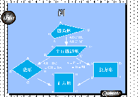

<html>
<head>
<title> Slide No.5 </title>
</head>

<frameset rows="430,130">

<noframes>
<body>
<a href="GIF/slide5.GIF"></a>

<a href="AU/voice5.au">
	</a>[231K]<p>
<!--		-->
今回の例題は、皆さんが小学校の時に習った、
<a href=""> 四角形 </a> についてです。<p>

四角形のうち、向かい合う辺が平行なものは、平行四辺形です。
平行四辺形のうち、４辺が等しいと菱形で、
４つの角が９０度だと長方形です。
更に、菱形でもあり、長方形でもあるものが正方形です。<p>

こんなことを小学生の時に習ったことを思い出されましたか？
<p>
<!--		-->

<hr>
<a href="slide6.html" target="_top">次の OHP へ</a>
<br><br>
<a href="slide4.html" target="_top">前の OHP へ</a>
<br><br>
<a href="HomePage.html" target="_top">OHP の一覧へ</a>
</body>
</noframes>

<frame src="onlyslide5.html">
<frame src="buttonexpla5.html">

</frameset>

</html>
